Tax-Free Childcare Application Check
Objective : Check if we can use the tax free childcare in the UK
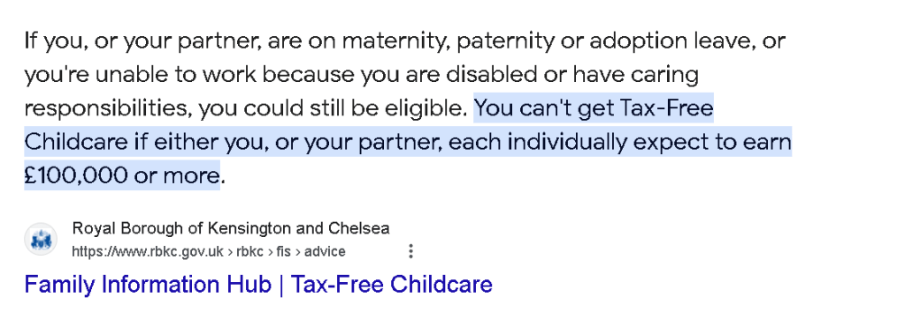
After the application got the reply from the accountant on checking the amount that is been withdrawn
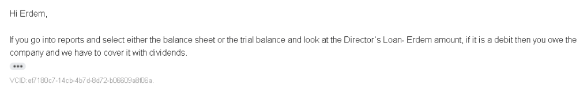
GPT to sort out the steps
To review the Director’s Loan Account in QuickBooks and assess if you owe the company, which might require covering the amount with dividends, follow these steps. This guidance is based on common QuickBooks interfaces and may vary slightly depending on your version of QuickBooks (Online, Desktop Pro, Premier, or Enterprise) and localization:
-
Open QuickBooks: Start QuickBooks and log in to your company file.
-
Access Reports: Navigate to the "Reports" menu. This can usually be found on the main dashboard or within a navigation bar at the top or side of the interface.
-
Select the Report:
-
For the Balance Sheet: Look for a report titled “Balance Sheet” or similar. This report shows the company’s assets, liabilities, and equity at a specific point in time.
-
For the Trial Balance: Search for a report called “Trial Balance”. This report lists the final balances in all your accounts, showing debits and credits over a specific period.
-
Customize the Report (if necessary): You might need to customize the report to see the details you want. Look for a “Customize” button or link. You might want to set a specific date range or filter the report to only show certain types of transactions or accounts.
-
Locate the Director’s Loan Account: Within the report, scroll or search for the account typically named “Director’s Loan”, “Director’s Loan Account”, “Shareholder Loan”, or something similar under liabilities (if expecting to see it as a credit) or assets (if it might be a debit).
-
Review the Balance:
-
If the balance is listed under assets and has a debit balance, this indicates the director (or shareholder) owes the company money.
-
If the balance is listed under liabilities with a credit balance, it suggests the company owes the director (or shareholder).
-
Assessing the Need for Dividends:
-
If the Director’s Loan Account shows a debit balance (meaning you owe the company), you may need to cover this with dividends. Dividends can be distributed to shareholders out of the company's profits. This action requires careful consideration and possibly consultation with an accountant to ensure compliance with tax regulations and company law.
-
Record Dividends (if necessary): If you decide to cover the debit balance with dividends, you'll need to make appropriate entries in QuickBooks to reflect the dividend distribution. This might involve creating a dividend transaction and linking it to the Director’s Loan Account to offset the debit balance.
-
Consult with an Accountant: It’s always advisable to consult with an accountant or financial advisor to understand the tax implications and ensure that all transactions are recorded in compliance with the relevant accounting principles and regulations.
Remember, the exact steps and terminology might vary depending on your specific QuickBooks version and the configuration of your company’s accounting system. Always ensure you're following the legal and accounting standards applicable in your jurisdiction, especially when it comes to handling director’s loans and distributing dividends.
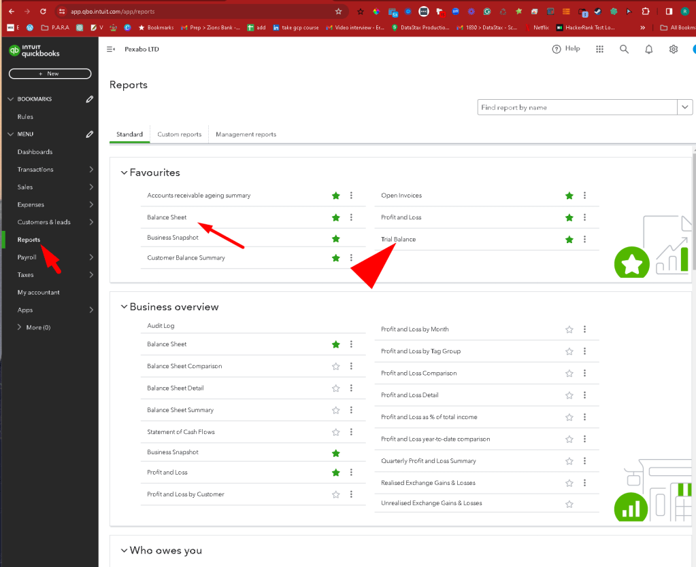
Report Period not so clear on Balance Sheet to select
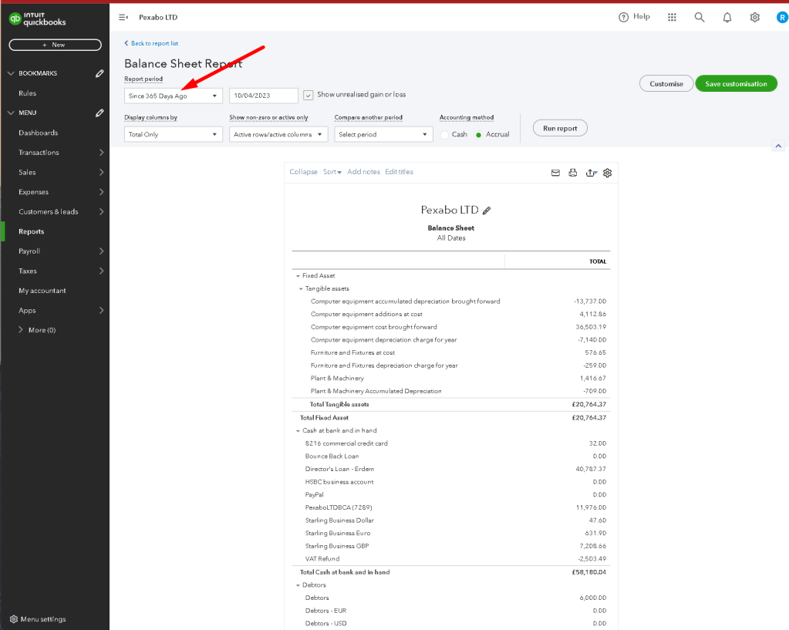
Director Loan
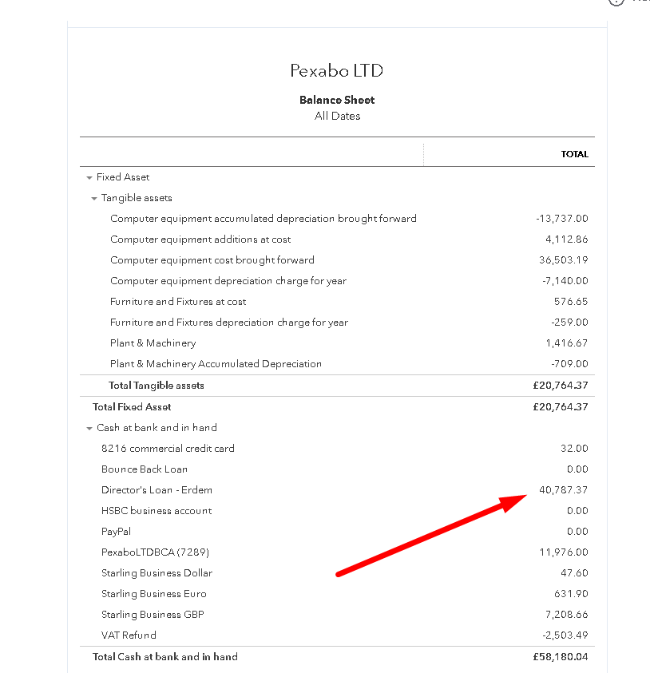
Risky sitution if 65k is the base > and 40k with draw it could eliminate the 100k mark in the Tax-Free Childcare.
38k might be able to do the trick and stay below 100k
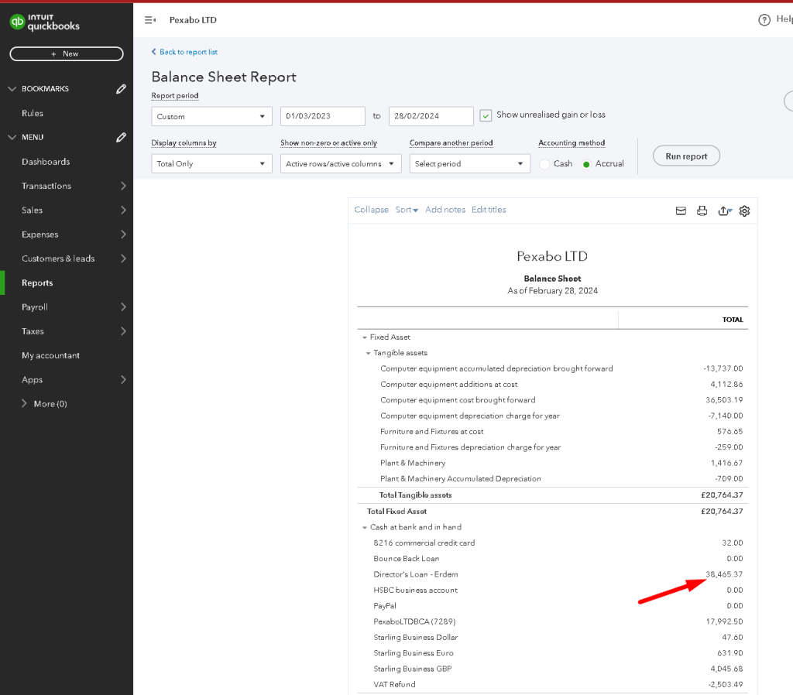
Numbers dont make sense due to the fact that we do self assesment on 65k and 1m > 7 year turn over also has 40k director loans( probably got converted into dividents)
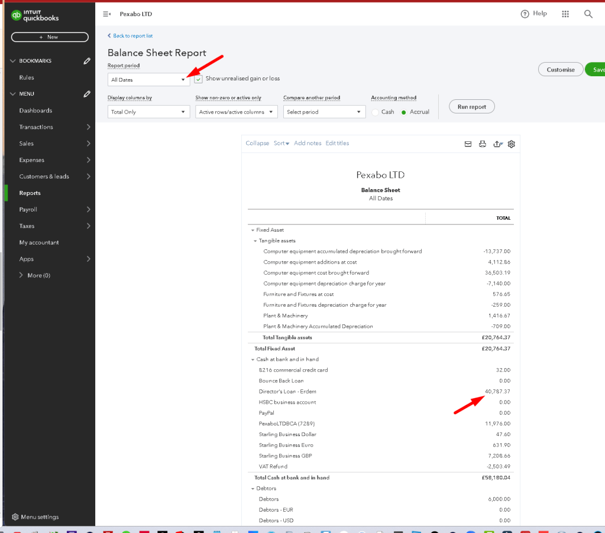
Lets check the trial balance as mentioned by the accountant
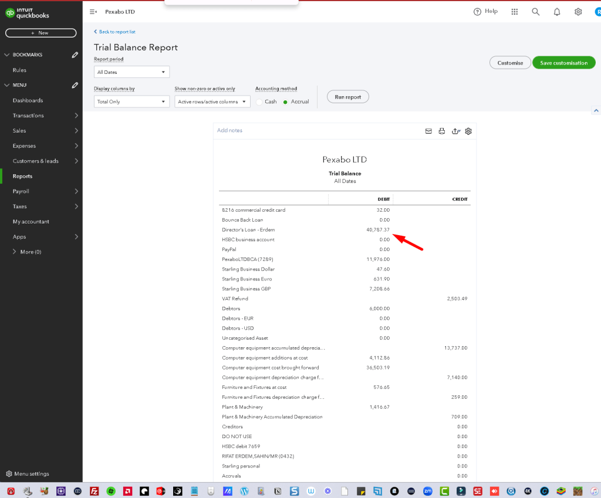
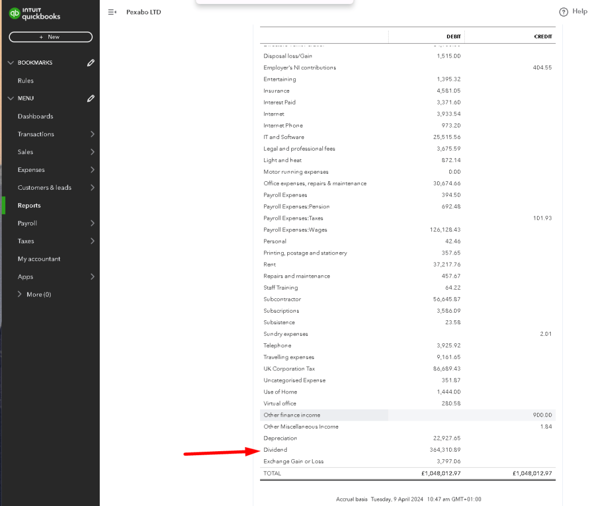
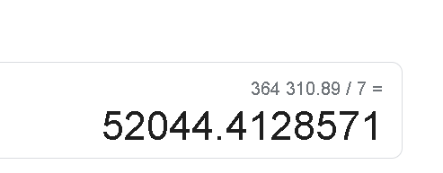
7 year average is higher to get the free childcare benefits.
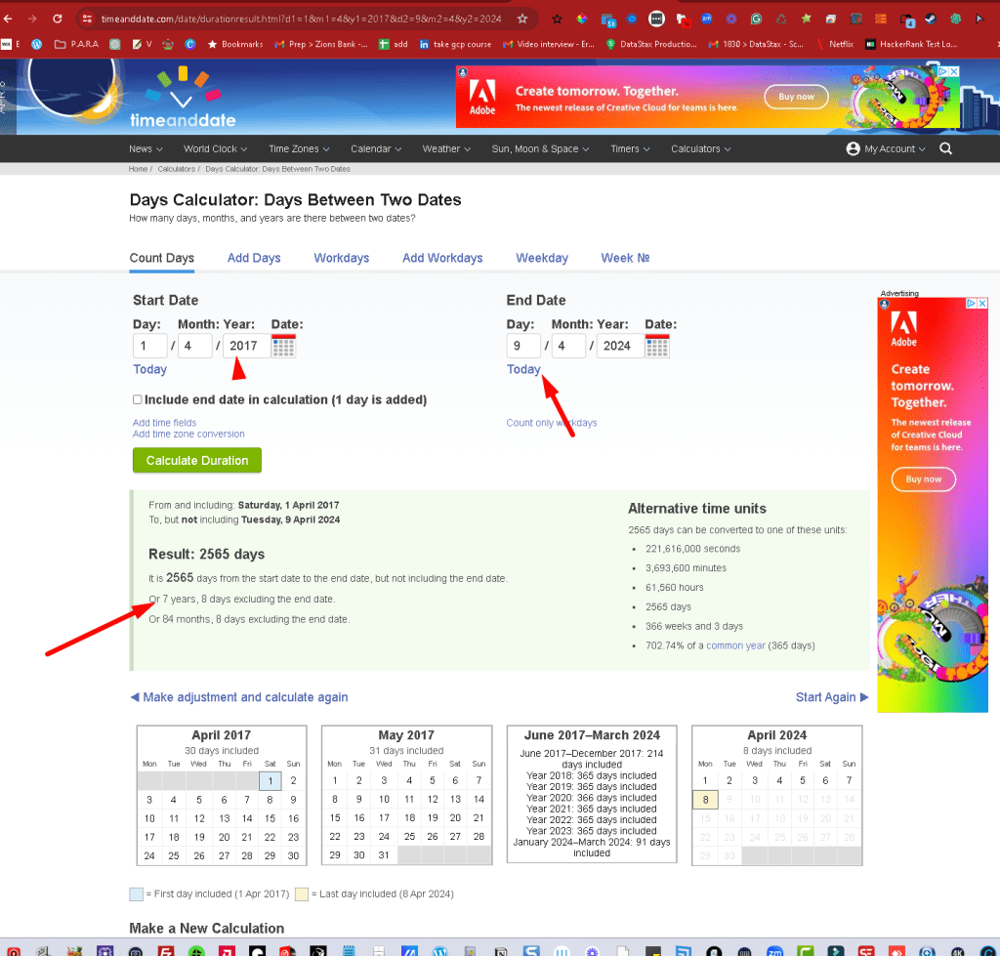
if the average dividents is 54k
Last financial year could be different
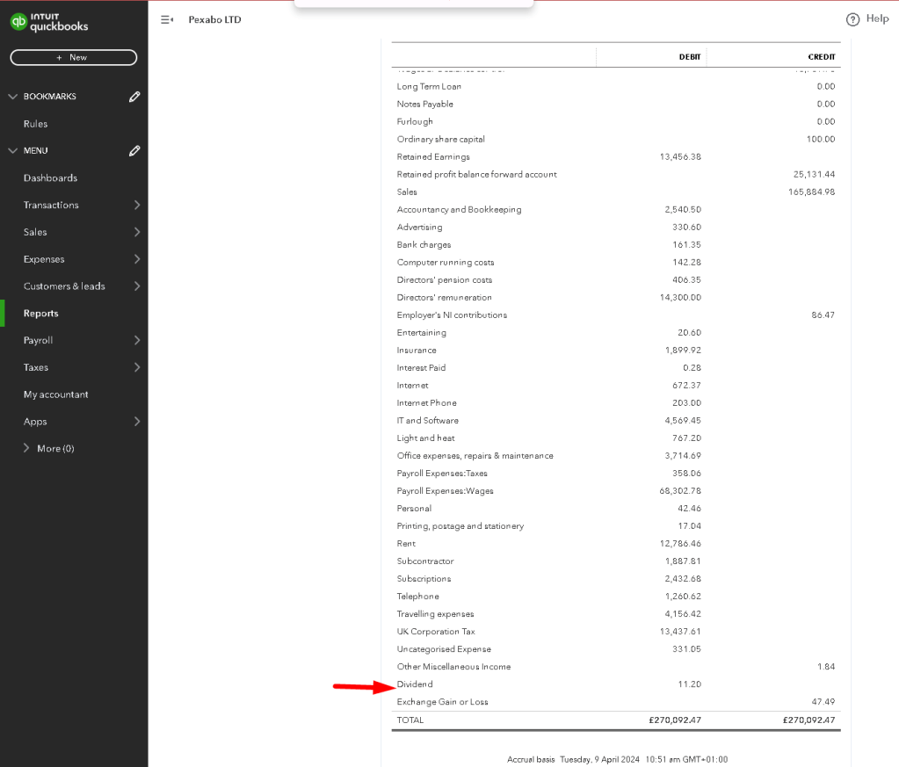
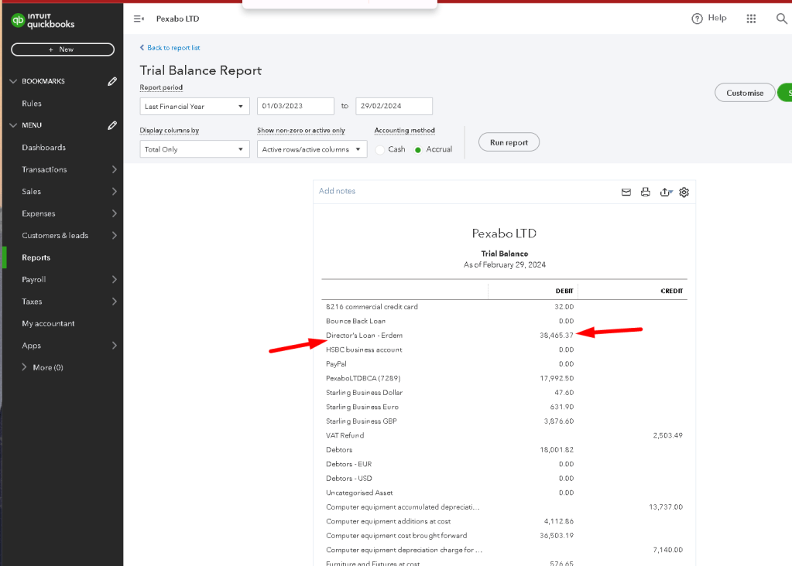
so what it means is i am pulling out 54k in average and when the business is slow it goes down to to 38k which still does not answer the personal income question.

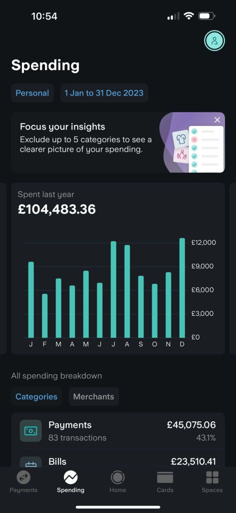
Still this argument is not clear due to the fact that i am withdraing the money to pay the tax creates the gross number should we look at the gross number or the number after the tax ?
So ask it to the accountant as there is a loop > we need nursery but it forces us to go over 100k mark.
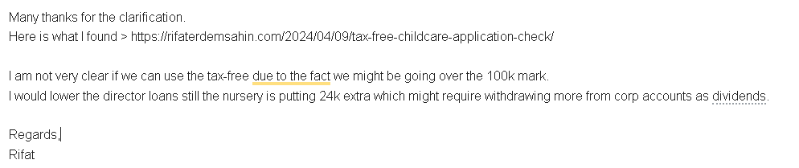
Imported from rifaterdemsahin.com · 2024